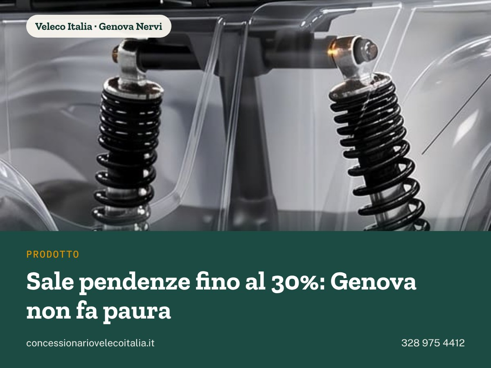

Abbiamo sistemato il modo in cui il sito conta visite e contatti, e abbiamo messo la scheda Google in modo che pubblichi da sola due aggiornamenti a settimana. Qui sotto cosa è cambiato, cosa va avanti senza di te, e le poche cose che servono da te.
113clic da Google a settembreil sito è comparso 3.000 volte
8recensioni Googlevoto 5,0 su 5
2post a settimanasulla scheda, in automatico
4 su 6vendite da Google o dal sitoda luglio, dalle tue risposte
Il sito: cosa è cambiato
Dove comprare Veleco
Una pagina nuova per chi cerca «veleco rivenditori» o «veleco sito ufficiale». Dice chiaro che il concessionario ufficiale sei tu e che consegni in tutta Italia continentale.
Guida riscritta
La guida allo scooter elettrico ora ha dieci domande con risposte semplici, sette tabelle di confronto tra i modelli e dieci domande frequenti. È la pagina che aiuta chi sta scegliendo, spesso il figlio o la figlia.
Titolo della home
Ora è «Veleco Italia | Concessionario ufficiale, Faster 4 ruote». Le ricerche con il nome Veleco sono quelle che portano i clic, e così Google lo mostra per primo.
Recensioni sul sito
Le parole di Roberto, Gemma, Andrea e Asia sono in home e nelle pagine regionali, con il pulsante «Lascia una recensione» e un indirizzo corto da stampare:
concessionariovelecoitalia.it/recensione
I numeri adesso sono giusti
Controllando gli strumenti di Google abbiamo trovato due errori nel modo in cui il sito contava, e li abbiamo corretti il 29 ottobre.
Contatti doppi
Ogni telefonata e ogni WhatsApp dal sito veniva contata due volte. I contatti nei report precedenti erano quindi il doppio di quelli reali: i numeri di settembre vanno letti dimezzati.
Prima pagina persa
La prima pagina vista da chi accettava i cookie non veniva registrata, quindi non sapevamo da dove arrivava la gente. Ora sì.
Perché conta
Se un giorno faremo pubblicità su Google, la pubblicità si regola proprio su questi numeri. Con numeri sbagliati avremmo buttato via i soldi.
Settembre su Google
Pagina
Clic
Home
53
Scooter elettrico anziani Campania
17
Chi siamo
13
Quasi tutte le ricerche contengono «Veleco»: chi ti cerca ti conosce già. Il lavoro dei prossimi mesi è farsi trovare anche da chi non conosce ancora il marchio.
Pagine su Google
14 pagine del sito, 11 già nei risultati di Google. Per le altre (modelli, dove comprare) abbiamo chiesto a Google di passare a leggerle: di solito ci mette qualche giorno.
La scheda Google ora si aggiorna da sola
La scheda su Google Maps è il primo posto dove la gente ti trova. Da questa settimana pubblica due aggiornamenti ogni settimana, senza che nessuno debba ricordarsene.
Martedì alle 10
Una notizia utile per chi ha più di 70 anni o assiste un genitore: Legge 104, pensioni, agevolazioni, barriere architettoniche, trasporti. Ogni notizia cita la fonte e finisce con un rimando al sito. Maurizio la approva prima che esca.
Giovedì alle 10
Un post nostro. Dodici già scritti fino al 21 gennaio: prova gratuita a Nervi, le recensioni di Gemma, Andrea e Asia, salite e autonomia, IVA al 4%, dove si può guidare, presenta un amico, assistenza, piombo o litio, freddo e batteria. Ognuno con la sua immagine.
Già pubblicati
La recensione di Roberto (29/10), la Legge 104 dal 2027 (29/10), la tredicesima e il bonus di dicembre (30/10). Martedì 3 novembre: la card sanitaria per gli over 75.
Foto nuove
21 foto pronte (tutti i modelli, lo showroom, gli accessori), in caricamento qualche foto al giorno.
Recensioni
A ogni recensione nuova arriva un'email a Maurizio, così si risponde in fretta. Rispondere a tutte, anche con due righe, conta per Google.
Logo
Preparato un logo «Veleco Italia · Concessionario ufficiale» nei colori del sito, e una versione quadrata del logo EasyScooter. Decidi tu quale mettere sulla scheda.

Uno dei post del giovedì già pronti: «Sale pendenze fino al 30%: Genova non fa paura», in uscita il 26 novembre.
Cosa ci serve da te
Cinque cose, nessuna urgente. Le facciamo anche al telefono in un quarto d'ora.
1. Prodotti e servizi sulla scheda Google
Abbiamo scritto tutto: 16 prodotti con prezzi e descrizioni, 10 servizi, la descrizione dell'attività, 6 domande con risposta. Google però permette di inserirli solo a mano dal tuo pannello. Lo facciamo insieme al telefono, oppure lo fa Maurizio con il tuo accesso.
2. Quattro frasi della guida da confermare
Vanno oltre quello che il sito diceva prima, quindi devono essere parole tue:
«Su strada senza marciapiede si va come un pedone, sul margine.»
«In carreggiata no.»
La parte sull'usato tra privati: niente IVA al 4%, niente detrazione, niente garanzia.
«Ti diciamo peso e misure prima di ordinare.»
3. Il logo della scheda
Veleco Italia nuovo, o EasyScooter? Se Veleco ha regole per i rivenditori sull'uso del nome, meglio chiedere al tuo referente prima di usarlo ovunque.
4. Recensioni e foto dei clienti
Dopo ogni consegna, un WhatsApp con il link concessionariovelecoitalia.it/recensione: da 8 a 20 recensioni in tre mesi è un obiettivo realistico, e fa salire la scheda. Le foto dei clienti con il loro Faster solo con il permesso, anche un messaggio WhatsApp va bene.
5. Pubblicità su Google: quando vuoi, ne parliamo
Ora che i numeri sono giusti si può fare un test serio. Con il margine di un Faster e una vendita ogni cinque richieste, un contatto vale 60–100 €: un test da 10–15 € al giorno per due mesi ha senso. Decidi tu quando.